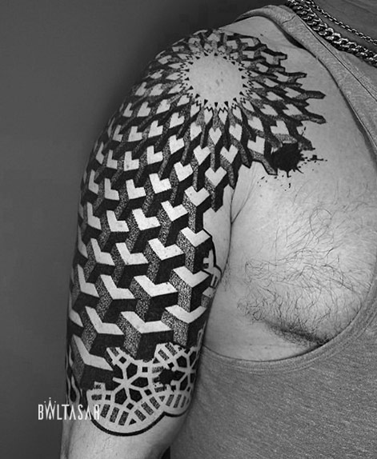
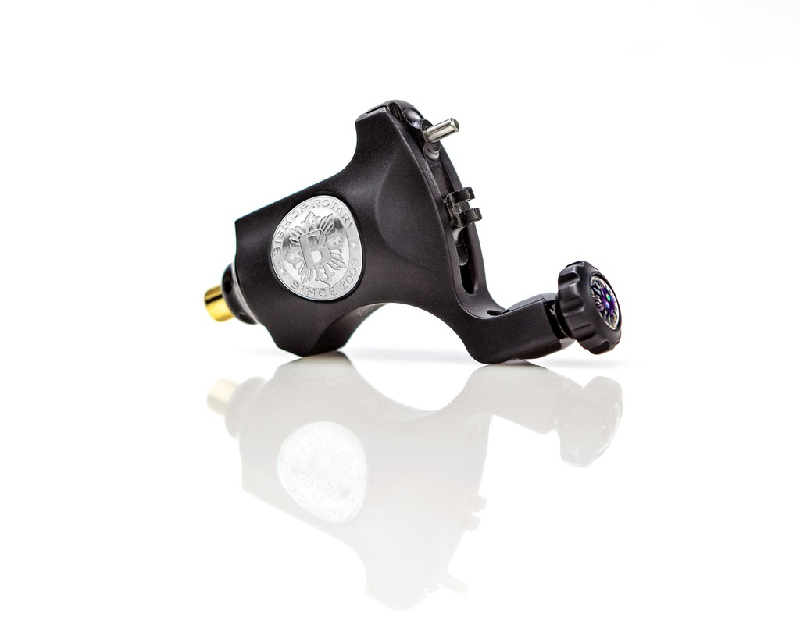
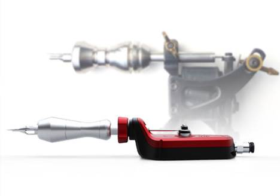

Muéstrame un hombre con un tatuaje y te mostraré un hombre con un
pasado interesante
- Jack London
Estilos y técnicas
Para el tatuador, la piel es el lienzo perfecto. Para el tatuado,
es su propia historia
Convertirse en artista del tatuaje
Hasta hace muy poco tiempo, había dos formas fundamentales de
aprender el oficio. La primera, convertirse en el paciente aprendiz
de un tatuador experimentado, si es que el aspirante -o la
aspirante, no olvidemos que siempre ha habido mujeres tatuadoras-
tenía la suerte de encontrar un buen sitio. La segunda, ser
autodidacta y crecer en conocimientos casi a la vez que en
experiencia. Esta opción era muy difícil hace años, cuando no
existía internet, pero es algo más fácil hoy, gracias a las guías y
los canales de YouTube especializados en el tema. Actualmente, las
nuevas generaciones tienen una tercera forma de aprender: centros
especializados, como la
EETP
o la
APT, donde se enseñan todas las vertientes del oficio -historia;
ilustración, tanto clásica como digital; normas de
higiénico-sanitarias; calibración de máquinas; prácticas...- y se
presta especial atención a la esfera artística del tatuador y la
importancia de encontrar un estilo propio.
Aprender un oficio
1. Tener madera de ilustrador: En primer lugar, un
buen futuro tatuador tiene que dibujar muchísimo y saber hacerlo muy
bien, con el fin de prepararse para poder convertir en realidad las
peticiones e ideas de futuros clientes.
2. Observar con atención: Además de darle duro al
dibujo, es muy importante analizar el trabajo de otros
profesionales, algo que está muy al alcance de la mano, ahora que
hay tantas convenciones de tatuaje y tanto material en la red.
Tenemos que ser capaces de entender los movimientos de la muñeca o
el modo en que estiran la piel, o averiguar cómo consiguen unos u
otros efectos, antes incluso de coger por primera vez una máquina.
3. Practicar sin parar: Luego, podemos empezar a
practicar técnicas y estilos diferentes sobre superficies que no
sean el papel o la piel humana. ¿A qué superficies me refiero? Desde
frutas, como naranjas o plátanos, hasta modernas pieles
artificiales, sin olvidar las láminas de polipìel o la famosa piel
de cerdo.
4. Familiarizarse con máquinas y agujas: El tándem
máquina + agujas conforma la verdadera herramienta de trabajo del
tatuador. Máquinas de bovina para rellenos, rotativas con aguja
tradicional o bien con cartuchos intercambiables...Ahora las
posibilades son enormes, cada cual puede escoger la máquina que más
se adapte a su estilo y a su forma de trabajar, una decisión que se
va configurando con el aprendizaje y con la práctica.
5. Autotatuarse: El paso previo al tatuaje de las
pieles ajenas, en muchos casos, es la propia piel. Según algunos
profesionales, tatuarse a uno mismo es una buena forma de entender
lo que significa marcar permanentemente el cuerpo. Se toma
conciencia del dolor, de la profundidad a la que llegan las agujas y
la resistencia que encuentran en su avance, del adecuado
funcionamiento de la máquina.
6. El turno de familiares y colegas: ¿Qué mejor
forma de practicar todo lo aprendido que con la gente que más te
aprecia y te quiere? Seguro que después de la experiencia hay quien
conserva un hermoso recuerdo para siempre. También puede que otros,
arrepentidos, acaben recurriendo a un cover o al famoso
láser.
7. El primer cliente: Después de...¿cuánto? ¿Un
año? ¿Año y medio de intenso trabajo? Tras el largo proceso de
formación y práctica, que incluye estar al día con los requisitos
legales, por fin llega el primer cliente de verdad del nuevo
tatuador. Te puedo asegurar que no lo olvidará jamás.
¿Qué estilos hay?
Abstracto, retro, naif, surrealismo, dadaísmo, pop art, cubismo,
art nouveau, fauvismo, simbolismo, expresionismo,
puntillismo, impresionismo, rococó, realismo...Al igual que el arte
pictórico tradicional, el tatuaje también puede ser clasificado en
una serie de estilos y técnicas. La elección o especialización del
artista tatuador dependerá de sus preferencias, conocimientos y
creatividad.
OLD SCHOOL, NEOTRADICIONAL Y NEW SCHOOL: El estilo
old school nació y se hizo popular gracias a tatuadores
norteamericanos como Gibs "Tatts" Thomas o Norman Keith Collins,
conocido como Sailor Jerry. Sus diseños eran sencillos, planos y sin
sombras, con líneas gruesas y marcadas, y rellenos muy saturados con
una paleta de colores limitada -negro, rojo, verde, amarillo y, a
veces, azul y marrón-. La estética de este tipo de tatuajes estuvo
marcada por un contexto adverso: la limitada variedad de agujas y
colores, todo fabricado de modo artesanal; el exceso de demanda y la
escasez de artistas, lo que provocaba que estos tuvieran que tatuar
a gran velocidad. El old school, muy popular aún hoy en
todo el mundo, se puede considerar como el origen de dos estilos
modernos; el neotradicional y el new school. El
NEOTRADICIONAL utiliza los diseños y la estética
del old school, respetando incluso su limitada paleta de
colores, pero se beneficia de las máquinasy técnicas modernas. Sus
principales características son la combinación de líneas gruesas y
finas, los colores degradados y las sombras. El estilo
NEW SCHOOL se aleja mucho más del
old school. De hecho, lo único que tiene en común con él,
en la mayoría de los casos, son las líneas marcadas y los rellenos
saturados. Por lo demás, el estilo new school se
caracteriza por utilizar colores llamativos y alejados de la
realidad y, aunque puede recurrir a iconos tradicionales, lo más
habitual son los dibujos y estilo cartoon muy coloreados,
sombreados y en posiciones que dan sensación de movimiento.
Tattoo de cuervo old schoolTattoo de cuervo neotradicionalTattoo de cuervo new school
JAPONÉS Y NEOJAPONÉS: Podríamos decir que todo el
tatuaje japonés, tanto el tradicional como el actual, se rige por un
ideal de belleza, fuerza y perdurabilidad. Su iconografía es muy
característica -peces koi, tigres, dragones, flores de loto o
cerezo, guerreros, samuráis...- y está cargada de simbolismo. Por
ello, y por su estética, cada vez se extiende más en Occidente. Sus
famosos diseños de cuerpo entero, muy comunes entre los miembros de
la yakuza, no dejan a nadie indiferente.
Si buscamos diferencias entre el estilo tradicional japonés y el
neojaponés, vamos a encontrar algo muy parecido a lo que sucede con
el new school y el neotradicional. En el estilo
japonés tradicional predominaba el negro como color de base y su
paleta cromática era muy reducida, limitándose sobre todo al rojo,
el verde y, a veces, el amarillo. Las líneas eran muy marcadas y los
colores, saturados y sin sombras. Todavía hay artistas que se
mantienen fieles a la esencia de lo tradicional; sin embargo, con la
llegada de las máquinas de tatuar y la evolución de las tintas,
muchos se decantaron por jugar con el grosor de las líneas, con las
sombras y con la riqueza cromática. En definitiva, evolucionaron
hacia el actual estilo neojaponés.
NEOTRIBAL: El estilo neotribal está basado en
elementos y diseños utilizados en el tatuaje tradicional de tribus
de todo el mundo. Pero, estre estas, destaca la influencia de la
cultura polinesia, que, con su renacimiento en Nueva Zelanda, Hawái,
Borneo, Tahiti o las islas Marquesas, ha vuelto a convertir este
estilo en tendencia. Son tatuajes ricos en patrones geométricos,
lineas paralelas y áreas amplias o bandas rellenas, todo ello en
negros muy sólidos.
Tatuaje neotribal
REALISMO Y SUS VARIANTES: El estilo realista
después de la llegada del tatuaje a Occidente, fue uno de los
primeros en afirmarse. En su versión más tradicional era
monocromático: el artista recreaba en la piel alguna imagen de la
realidad con distintas diluciones de tinta negra, obteniendo así un
resultado similar a los dibujos realistas hechos a lápiz o
carboncillo. Hoy en dia es un estilo que goza de muy buena salud y
ha evolucionado mucho gracias a las tintas y las técnicas modernas.
Tattoo realista
BLACKWORK: Este estilo de tatuaje utiliza el negro
como tinta y sin diluir. Algunos diseños son abstractos, llenos de
lineas, patrones y dibujos geométricos. Otros representan figuras
con contornos que evocan imágenes reales, algo parecido a los
grafitis que se hacen con plantillas. Incluso hay artistas que crean
la imagen del tatuaje en negativo, usando el color de la piel para
evocar la figura dentro del fondo negro.
Tattoo blackwork con patrones geométricosTattoo blackwork con una figura
ESTILO GEOMÉTRICO: Quizá tendría que haber hablado
del estilo geométrico como parte integrante del blackwork,
pero creo que sus características merecen ser reseñadas aparte.
Consiste en construir un dibujo con forma reconocible, a base de
figuras geométricas. Es algo parecido a unir con líneas las
estrellas de la bóveda celeste para convertir en una imagen
constelaciones como la Osa Mayor o Pegaso, aunque con mucho más
detalle.

Tattoo Estilo Geométrico
BIOMECHANICAL Y 3D: Los tatuajes de estilo
biomechanical en 3d convierten tu cuerpo en cibernético y
reproducen objetos que parecen querer salir de tu piel. En este
estilo de tatuaje es crucial un gran dominio del dibujo realista
para hacer que la ciencia ficción parezca auténtica.
Tattoo Biomechanical 3D
ILUSTRACIÓN Y DERIVADOS: Mi Pequeño Pony, los Osos
Amorosos, personajes del universo Ghibli o diseños por Disney...El
estilo de ilustración combina los contornos marcados y los colores
intensos y saturados del new school con las técnicas de
sombreado del estilo realista. Abarca desde diseños tiernos y casi
empalagosos al más puro estilo japonés kawaii, cuyo icono
es Hello Kitty, hasta dibujos gamberros y divertidos que recuerdan
al loco Roger Rabbit.
Tattoo ilustrado del estudio Ghibli
Agujas, tinta y piel
Naces, creces, te tatúas y te vuelves a tatuar.
El kit del tatuador
Máquinas de tatuar -un par como mínimo- y cableado, fuente de
alimentación y pedal, grips y tubos -desechables o no-,
agujas de líneas y de relleno, tinta de diferentes colores, tubitos
para la tinta, botes para agua destilada y líquidos antibacterianos,
vaselina, guantes,rollo de film transparente, gomas elásticas, papel
hectográfico, depresores de madera, contenedor de residuos
peligrosos, papel de celulosa...Si plasmáramos en una lista
detallada todo lo que necesita untatuador para tarbajar, el
resultado sería extenso, pero no infinito. Para decirlo de un modo
muy sencillo, su material se divide en dos tipos: lo que va a la
basura después de cada sesión y lo que no.
POR TU (Y SU) SEGURIDAD
El sector del tatuaje se ha ido especializando cada vez más y los
profesionales cuentan con todo tipo de material, que está pensado
para garantizar la seguridad higiénico-sanitaria, tanto del cliente
como del tatuador. Hoy en día, incluso los mangos que sirven par
sujetar la máquina -grips- o los tubos donde se guardan las
agujas son deschables. Por ello, después de cada sesión, lo único
que el tatuador conservará del material utilizado será su máquina. Y
si los grips y los tubos no son desechables, dado que todas
estas piezas están expuestas a las salpicaduras de tinta y de
sangre, irán de cabeza al autoclave para su completa esterilización.
Evidentemente, esto no es solo por sentido común, es porque, además,
la ley obliga al tatuador a trabajar en un ambiente esterilizado al
máximo. Para ello, antes de poder empezar a tatuar, los
profesionales deberán adquirir conocimientos sobre la legislación
que les afecta y sumarlos a las habilidades técnicas y artísticas
propias de su profesión.
Los requisitos legales difieren mucho entre los países de la Unión
Europea. Por ejemplo, Francia e Italia están a la cabeza en lo
tocante a la regulación de la profesión de tatuador. Hay países, en
cambio, en los que la regulación es casi inexistente, y en otros,
como España, se exige un curso higiénico-sanitario, pero nadie se
encarga de comprobar si la persona que obtiene el título sabe o no
tatuar. De hecho, es una realidad bastante común que estos
profesionales tengan que cotizar a la Seguridad Social como
esteticistas, no como tatuadores.
Para intentar unificar criterios sobre el oficio de tatuador, en
2011 se creó un Comité Europeo de Normalización del Tatuaje,
integrado por profesionales del sector de toda Europa, con el fin de
establecer una reglamentación estándar en la Unión Europea. Los
objetivos principales se centran en determinar unos requisitos
mínimos, tanto formativos como higiénico-sanitarios, para evitar que
se ponga en riesgo la salud de las personas y para conseguir que las
administraciones de todos los países implicados respeten la figura
del artista tatuador como lo que es: un profesional más, con sus
derechos y sus obligaciones.
La máquina
Trrrrrrrrrrr...trrr...trrr...trrrrrrr...Seguro que te has dado
cuenta de que el tatuaje ya no "suena" como antes. Ahora, en muchos
casos, ese sonido que hacen las máquinas de bobinas y que tanto nos
gusta a los románticos del tatuaje ha sido sustituido por el suave
zumbido de las máquinas rotativas modernas.
Actualmente, existen tres tipos de máquinas y los tatuadores se
decantan por una u otra según lo que busquen o necesiten. La
decisión se toma en función de la costumbre, la versatilidad, el
peso y la dificultad de uso.
MÁQUINAS DE BOBINA
Las máquinas de bobina se impusieron hace cien años por encima de
las máquinas rotativas, porque su mecanismo era tan sencillo como el
timbre de una puerta. De hecho, muchas de las primeras máquinas de
este tipo se crearon a partir de la modificación de timbres, y esa
fabricación casera y artesanal se extendió hasta bien entrado el
siglo XXI.
En las máquinas de bobina la aguja se mueve hacia arriba y hacia
abajo gracias a la acción de dos bobinas que generan un campo
electromagnético al recibir la corriente de la fuente de
alimentación. Son máquinas con bastante fuerza, por lo que aplican
rellenos muy saturados en color y delinean rápido y con intensidad.
En cuanto al peso, es muy superior al resto, lo que en unos casos es
un inconveniente y en otros una ventaja. Aunque son máquinas muy
ruidosas, su sonido es mítico, por lo que hay muchos tatuadores y
tatuados para los que esto es una ventaja. Quizá los mayores
inconvenientes de las máquinas de bobina sean la vibración -hace
falta más pericia para delinear- y el hecho de que hay que saber
calibrarlas.
MÁQUINAS ROTATIVAS
Las máquinas rotativas, basadas en el diseño original de Samuel
O´Reilly, han hecho furor en los últimos años y cada vez se utilizan
más. En este caso, las agujas se mueven por la acción de un motor de
corriente continua. Apenas hacen ruido, son ligeras y vibran menos
que las de bobina, por lo que muchos tatuadores dicen que pueden
utilizarse casi como un pincel. Hay numerosos modelos de estas
máquinas que incluso incorporan cartuchos intercambiables para poder
usar varias agujas con una misma máquina. En cuanto a las
desventajas, parece que saturan menos los colores.
MÁQUINAS NEUMÁTICAS
Las máquinas neumáticas fueron inventadas en el año 2000 y, por
tanto, son las más recientes. Funcionan con aire comprimido y son
ligeras y silenciosas, pero, en pleno boom de las máquinas
rotativas, aún no han calado demasiado en el mercado del tatuaje.
Máquina de bobina para tatuar.

Máquina rotativa de tatuajes profesional

Máquina neumática para tatuar
Los pinceles del tatuaje
La elección de las agujas, al igual que en el caso de las máquinas,
es algo que depende al cien por cien del tatuador. Así que, si
tienes claro lo que quieres tatuarte -un clásico
old school, un realista a color, un geométrico, un
ilustrativo o un ecléctico-, lo que de verdad importa es que escojas
al tatuador que trabaje el estilo que buscas, porque ya se encargará
él de utilizar las agujas adecuadas. Aun así, creo que no está de
más que conozcas cuántos tipos de agujas existen y para qué se usan.
Si lo sintetizamos al máximo, existen dos tipos básicos de agujas:
las de línea y las de relleno. Pero, a la hora de la verdad, la cosa
se complica. Tanto las agujas de línea como las de relleno pueden
tener distintas formas y grosores. Es más, lo que llamamos "agujas"
son en realidad varillas de acero con penachos de agujas soldadas en
el extremo. El modo en que se disponen esos penachos -en cono, en
cilindro, en hilera simple o doble...- es lo que va a determinar el
trazo que hagan al insertar la tinta en nuestra piel.
ROUND LINER (RL)
Las agujas para round liner tienen desde una única aguja
hasta dieciocho y están soldadas de forma cónica para conseguir un
ápice agudo que ayude a concentrar la tinta. Se usan para hacer
lineas más o menos gruesas, en función del número de agujas.
ROUND SHADER (RS)
Las round shader tienen entre tres y dieciocho agujas que
están soldadas formando un cilindro, por lo que la punta tiene
aspecto tubular.Están pensadas para hacer rellenos, sombras e
incluso líneas gruesas.
MAGNUM (M1 y M2)
Las magnum están formadas por dos hileras de agujas (desde
5 hasta 39) paralelas, teniendo siempre la hilera trasera dos agujas
más que la delantera. Al soldar las agujas, las hileras pueden
quedar más -stacked- o menos -weaved- cerca. Se
usan para rellenos, mezclas de colores y sombras.
ROUND MAGNUM (RM)
Las round magnum tienen uan estructura similar a las
magnum clásicas, pero sus agujas se sueldan dejando los
bordes redondeados, por eso también se las llama "lengua de gato".
Se usan para lo mismo que las magnum, aunque parece que son
más eficaces para hacer transiciones entre colores y difuminados en
grises. Sin embargo, esto debe valorarlo el tatuador.
FLAT SHADER (F)
Las flat shader tienen una sola hilera de agujas y están
pensadas para sombrear.
Tintas
Seguro que te has fijado en la colección de botecitos de colores que
tienen los tatuadores en el estudio. Esos botes contienen las
tintas, de múltiples marcas y colores, que marcarán para siempre tu
piel. Si has seguido mi consejo y estás ante un tatuador
profesional, bien formado y experimentado, lo más normal es que las
tintas sean de buena calidad. Pero ¿qué quiero decir con "tintas de
buena calidad"? Para tu tranquilidad, antes de acabar en la mesa del
artista, esas tintas han pasado por un largo y exhaustivo proceso de
producción en el que la seguridad para tu salud desempeña un papel
fundamental.
CÓMO SE FABRICAN LAS TINTAS
En el mundo hay cinco fábricas de pigmentos, pero de esas cinco solo
dos -Bayer y Basf- producen pigmentos susceptibles de ser usados en
la piel. Además, de todos los pigmentos que elaboran estas dos
fábricas, solo pueden ser transformados en tinta para tatuaje entre
el 5 y el 7 por ciento. Antes de salir hacia las fábricas de
producción de tinta, los pigmentos producidos por Bayer y Basf son
sometidos a un primer análisis exhaustivo para garantizar su
seguridad. Esto, como verás, se repite en numerosas ocasiones a lo
largo del proceso, que consta de seis fases:
1. Fase de molido
Cuando un pigmento llega a la fábrica de tinta, lo primero que se
hace con él es molerlo hasta conseguir el tamaño adecuado -entre 10
y 15 micras-. Esta es una fase delicada del proceso, ya que el
pigmento corre el riesgo de contaminarse con los metales pesados que
se desprenden del mismo molino en el que se reduce su tamaño. Por
ello, antes de pasar a la siguiente fase, se lleva a cabo un segundo
análisis para descartar posibles contaminantes que puedan ser
nocivos para la salud.
2. Fase de vehículo
El pigmento es sólido y necesita disolver para poder ser introducido
en la piel. Ese proceso se realiza en un compuesto llamado
"vehículo". Los principales ingredientes del vehículo son el agua,
diversos alcoholes que conservan la calidad del producto y la
glicerina, cuya función es provocar una supuración controlada e
hidratar la herida en los momentos posteriores al tatuaje.
3. Fase de seguridad
Una vez mezclados el pigmento y el vehículo, esta primera versión de
la tinta se envía a un laboratorio especializado -como el alemán
CTL- para que sea sometida a un análisis mucho más profundo y se
pueda detectar la posible presencia de metales pesados, aminas
aromáticas, pigmentos azoicos, agentes cancerígenos...
4. Fase de envasado
Si las muestras reciben el visto bueno por parte del laboratorio, la
tinta se envas, se esteriliza con rayos gamma y regresa al
laboratorio para hacer los últimos análisis biológicos antes de
ponerla a la venta.
5. Fase de comercialización
Después de todo el proceso, la tinta ya está lista para que tu
tatuador se la lleve al estudio y rellene los tubitos en los que
introducirá las agujas que te marcarán la piel.
Del diseño al espacio de trabajo
FASE DE DISEÑO
Tanto si se trata de una ilustración elaborada por el propio
tatuador, como si te vas a tatuar una imagen realista basada en una
fotografía, siempre va a haber una primera fase de preparación del
diseño con el fin de adecuarlo, en tamaño y posición, a la zona
escogida para el tatuaje. En cuanto al tamaño, te recomiendo que
sigas los consejos del tatuador. Este tendrá en cuenta el grado de
sofisticación del diseño -cuantos más detalles tenga, mayor tendrá
que ser su tamaño- y el equilibrio estético con respecto a la zona
del cuerpo escogida. Si quieres tatuarte el típico "Amor de madre",
lo más probable es que puedas decidir con libertad. En cambio, si lo
que quieres es una reproducción con todo lujo de detalles de
Las Meninas de Velázquez, más vale que tengas una espalda
ancha.
LA MESA DE TRABAJO
Antes de empezar, el artista cubrirá y envolverá todas aquellas
superficies de la zona de trabajo con las que vaya a entrar en
contacto durante el proceso de tatuaje: los botes de tinta y de
limpieza, la mesa, el tronco articulado del flexo -si es que suele
cambiar su posición mientras tarbaja-, la fuente de
alimentación...Incluso la máquina y el clip-cord -el cable
que va de la fuente de alimentación a la máquina- son envueltos con
fundas específicas. Todo esto se hace así para que el material quede
lo más estéril posible antes de empezar a tatuar.
FASE DE CALCO
El mejor punto de partida a la hora de realizar un tatuaje es llevar
a cabo una buena transferencia del dibujo desde el papel a tu piel.
Este es el momento del proceso en el que te das cuenta de que el
tatuaje, además de estar íntimamente relacionado con la pintura,
también lo está con la escultura. El cuerpo humano dista mucho de
ser plano como una hoja, su superficie es curvilínea y tanto su
textura como su forma van cambiando con el paso del tiempo. Para que
el tatuaje quede ubicado en el mejor sitio posible del cuerpo, los
tatuadores utilizan papel hectográfico. Primero reproducen las
líneas del dibujo que ellos consideran claves en el anverso de la
hoja que contiene el diseño. Y a continuación, sobre la piel limpia
y cubierta por una fina capa de líquido de transferencia, calcan el
diseño.